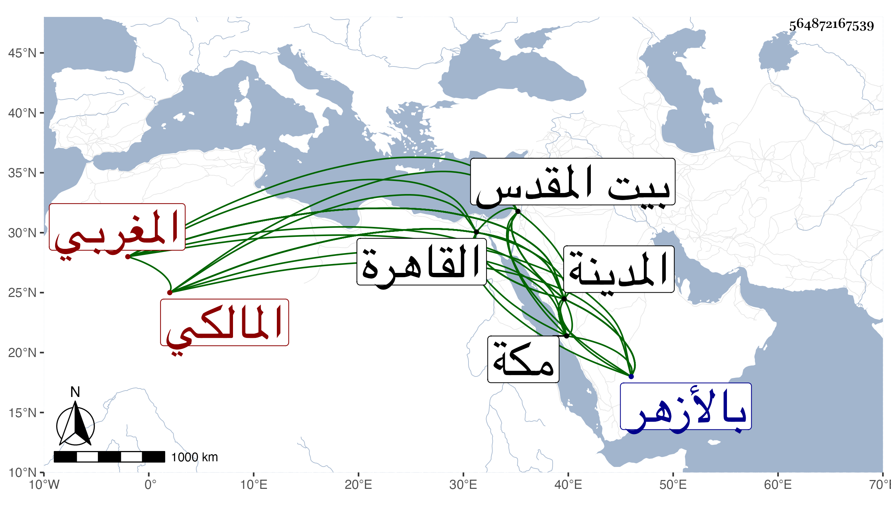

0902Sakhawi.DawLamic.ITO20230111-ara1.EIS1600.564872167539
Biography ID: 564872167539
950
يحيى بن أحمد بن يحيى الزندوني ويقال له أيضا الزنداوي المغربي المالكي نزيل المدينة . ولد قبيل سنة عشرين وثمانمائة ومات أبوه فيها فنشأ يتيما فقرأ القرآن وسافر إلى الحج فحج في سنة اثنتين وأربعين وجاور ثم رجع وزار بيت المقدس وأقرأ في بعض نواحيه الأولاد دون سنة ، وسافر إلى القاهرة فأقام بالأزهر يسيرا ثم حج في سنة خمس وأربعين وكانت وقفة الجمعة وجاور أيضا ، ثم قدم المدينة فقطنها وتصدى فيها لإقراء الأبناء أيضا فقرأ عليه من أهلها طبقة بعد طبقة وانتفع به في ذلك وتلا على السيد الطباطبي تجويدا وصحب الشمس الزعيفريني وحكى لي عنه أنه كان يقول من قال جعلني الله في بركتك فقل له نعم ويقول أيضا اختص أهل المدينة بآيات يحبون من هاجر إليهم فإن أعطوا منها رضوا وإن لم يعطوا منها إذا هم يسخطون والمرجفون في المدينة ولكن المعنى بالآيتين الأخيرتين أهل النفاق . وقد لقيته بالمدينة وأهلها كالمتفقين على الثناء على بركته وخيره ثم قصدني ونحن وإياه سائرين إلى مكة بالصفراء وبالغ في الاستئناس بي . ومات في سنة خمس وتسعين بالمدينة رحمه الله وإيانا ونفعنا به .
